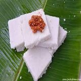
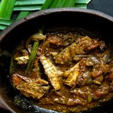
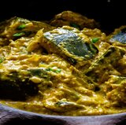
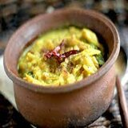

-

Milk Rice (Kiri Báth) with Lunu Miris
This is a simple enough breakfast dish that can make with two main ingredients. Tradition and simplicity make it a symbolical dish for any type of celebratory occasion. Sri Lankan use different rice type for this dish basmati and jasmine rice is a good substitute jasmine rice is highly recommended.Serve with a side dish called Lunu miris but if you have chicken gravy the dish will be much more delicious.
-

Sri Lankan Canned Fish Curry(Tuna curry)
A salmon canned fish curry full of curry flavors yet easy to make in a hurry.With a thick gravy made up of onions, tomatoes, spices and coconut milk this Sri Lankan salmon curry might breathe new life to those canned mackerels on your shelf. You can adjust the spiciness as according to you but with original spicy is the best!
-

Pumpkin Curry in Roasted Coconut
Also known as “Kálu pol wáttákka”, a much creamier, thicker pumpkin curry than what you’ll be accustomed to. With the help of roasted rice and coconut, a regular Sri Lankan pumpkin curry transforms into a thicker and creamier dish. The taste of this pumpkin curry with roasted coconut and rice is different from the regular pumpkin curry we cook for our meals and unless you cook it, you won’t know the difference.
-

Jackfruit Curry(Sri Lankan kírí kós)
Jackfruit curry is a traditional and authentic Sri Lankan dish for you to enjoy. Jackfruit curry is also know as kírí kós. Made with creamy coconut milk, this popular curry is a must-try traditional jackfruit recipe. One of the best foods to increase lactation for new moms. Jackfruit curry is a perfect combination of natural starch harmonizing with Sri Lankan spices and coconut milk to give you a creamy vegan/vegetarian dish.
-

Sri Lankan Black Pepper Chicken Curry
Using pepper as the key ingredient and Sri Lankan curry powders, here’s how you make a delicious black pepper chicken curry with a thick coconut sauce. Black pepper is well-known for its health benefits. Specially when it comes to digestion and antibacterial quality, adding them you your cooking gives you a chance of getting more the benefits into you. When making the dish, you need to keep an eye on the amount of pepper you use!